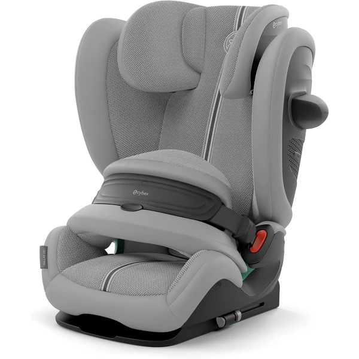
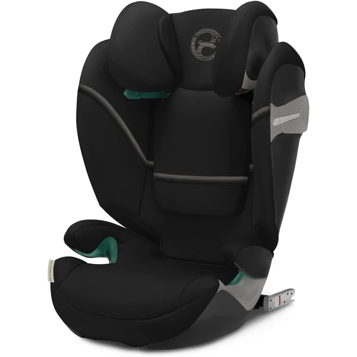
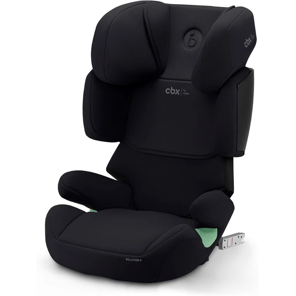
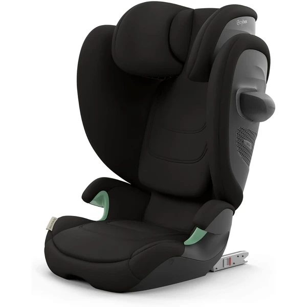
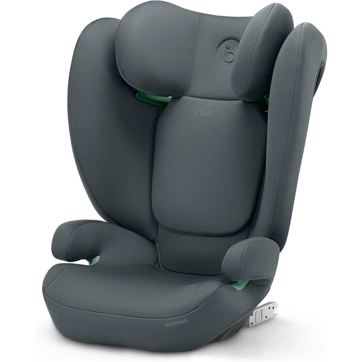

Sillas de coche Cybex: qué ofrece la marca
Cybex es, con diferencia, la marca de sillas de coche más buscada en España. Se ha posicionado como marca de gama media-alta, con foco en seguridad (protección lateral reforzada L.S.P.) y diseño. A diferencia de otras marcas con un único modelo por etapa, Cybex tiene varias líneas diferenciadas según lo que busques.
- Todos sus modelos principales incluyen Isofix — si quieres entender bien cómo funciona antes de elegir, consulta la guía completa de Isofix
¿Quieres verlas todas juntas?
Compara los modelos de Cybex con los del resto de marcas en nuestro comparador de sillitas de coche.
Modelos Cybex por etapa

Cloud G i-Size Comfort
Capazo i-Size para los primeros meses, ligero (3,9 kg) y a contramarcha, pensado para instalarse con la Base G de Cybex (se vende aparte) y compatible como sistema de viaje con cochecitos Cybex/gb mediante adaptador.
Características principales
Lo que destacan las familias
Lo sencillo que resulta instalarla —tanto con Isofix como solo con el cinturón— y su compatibilidad con los cochecitos Cybex mediante adaptadores, para usarla también como sistema de viaje.

Pallas G i-Size (G2)
Silla evolutiva a favor de la marcha con cojín de seguridad (escudo) en vez de arnés tradicional, pensada para acompañar desde que el niño deja el Grupo 0+ hasta los 12 años.
Características principales
Lo que destacan las familias
El sistema de cojín de seguridad (escudo), que varias reseñas destacan porque el niño no se les cae hacia delante al dormirse y reduce la sensación de tirones en el cuello frente a un arnés tradicional, además de lo sencilla que resulta la instalación con Isofix.

Solution S2 i-Fix
Alzador con respaldo para la segunda etapa, de los 3 a los 12 años, compatible con Isofix opcional o solo con el cinturón del coche.
Características principales
Lo que destacan las familias
El reposacabezas reclinable, que varias familias destacan porque evita que la cabeza del niño se caiga hacia delante al dormir en viajes largos, además de lo sencilla y estable que resulta la instalación con Isofix.

Solution X i-Fix
Alzador con respaldo, versión más económica de la submarca CBX, para la etapa de los 3 a los 12 años, compatible con o sin Isofix.
Características principales
Lo que destacan las familias
El reposacabezas reclinable en varias posiciones, que evita que la cabeza del niño se caiga hacia delante al dormir, junto con lo sencilla que resulta la instalación con Isofix.

Solution G2
Elevador con respaldo de Grupo 2/3, con anclaje Isofix para mayor estabilidad y protección lateral LSP Plus, pensado para acompañar desde los 3 hasta los 12 años.
Características principales
Lo que destacan las familias
Lo firme que queda instalada gracias al Isofix, además de la sensación de calidad y el buen apoyo lateral que ofrece en trayectos largos.

Solution B i-Fix
Elevador ligero de Grupo 2/3, con anclaje Isofix y reposacabezas ajustable en 12 posiciones, pensado como opción más económica dentro del catálogo Cybex.
Características principales
Lo que destacan las familias
Lo ligera y sencilla que resulta de instalar y quitar del coche, además de lo cómodo que resulta para el niño incluso como elevador en la etapa final.
¿Isofix o instalación con cinturón?
La práctica totalidad del catálogo actual de Cybex incorpora Isofix o base compatible. Si buscas específicamente comparar Isofix entre marcas, consulta también la guía transversal de Isofix.
Cybex frente a otras marcas
Si todavía estás decidiendo entre marcas, puedes comparar directamente con Maxi-Cosi y Britax Römer, las otras dos marcas más buscadas en España.
Preguntas frecuentes
¿Las sillas Cybex son más caras que otras marcas?
En general sí, se posicionan en gama media-alta, aunque dentro de su catálogo hay diferencias de precio notables según el modelo.
¿Todos los modelos Cybex llevan Isofix?
La mayoría de su catálogo actual sí, aunque conviene verificar el modelo concreto antes de comprar.
¿Merece la pena Solution S2 i-Fix frente a la versión CBX más económica?
Depende de tu prioridad: si te importa más ajustar presupuesto, CBX (submarca de Cybex) ofrece prestaciones muy similares en la misma etapa a menor precio; si prefieres el respaldo de marca principal Cybex, Solution S2 es la opción equivalente.
Guía informativa de Lauderem. Los enlaces a productos llevan directamente a la ficha en Amazon.es.